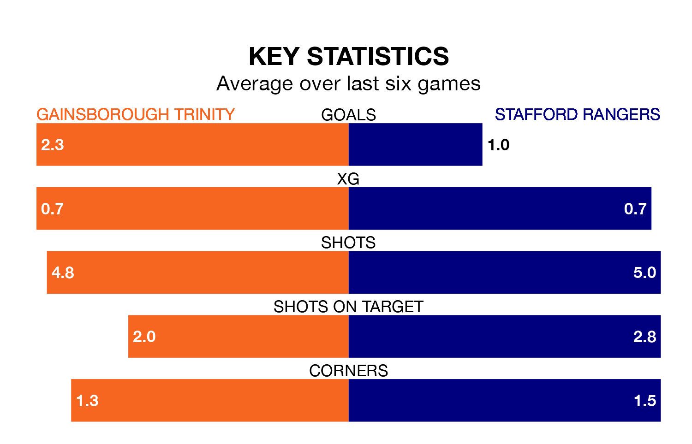

Struggling Stafford Rangers face Gainsborough Trinity away at the Northolme on Monday looking to build on a win in their last league outing.
After securing all three points with a 1-0 victory over Workington on Saturday, Stafford sit 19th in the Northern Premier League.
They travel to play a Gainsborough Trinity side 13th in the standings, who also won their last match, 3-1 against Bamber Bridge.
In the last 10 years, Gainsborough Trinity and Stafford have played each other on nine occasions. Gainsborough Trinity won two of them, Stafford one, and they drew six times.
On average, the Blues scored 1.2 goals and Stafford 1.3 in those matches.
Their last meeting was on December 26, when Stafford won 4-0 at home.
Gainsborough Trinity are in fantastic form in the Northern Premier League, with five wins and one loss from their last six games.
With three wins and three losses over that period, Stafford's form is much worse – they have taken nine points from 18, compared to the Blues' 15.
With 34 goals in 35 games so far this season, Rangers are the league's joint-third-lowest scorers with 1.0 goals per game. And they are conceding more than average, letting in 70 goals at a rate of 2.0 per game.
The hosts are also below average scorers, with 1.5 goals per game, compared to a league average of 1.6. They have conceded 1.6 goals per game.
Updated: 10:31 (UTC), 31/03/24